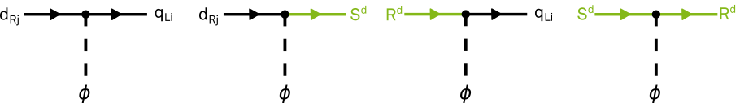
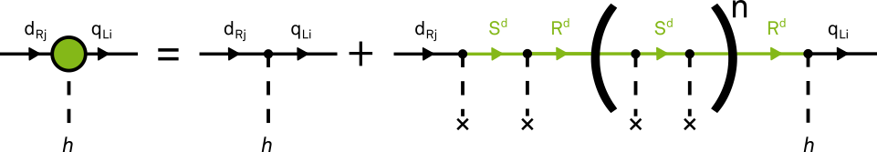
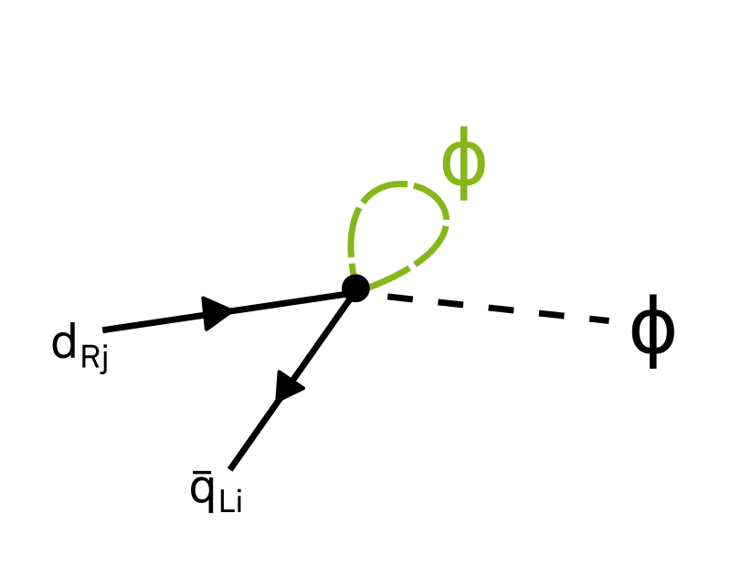
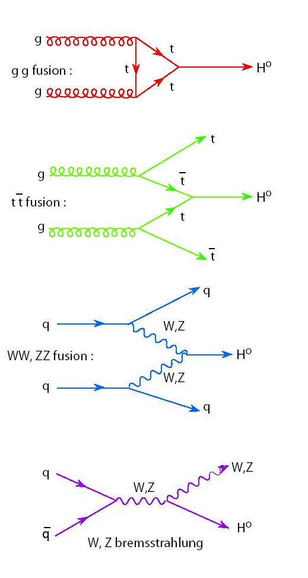
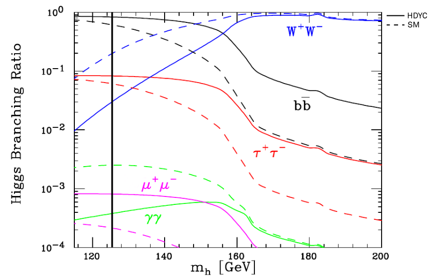
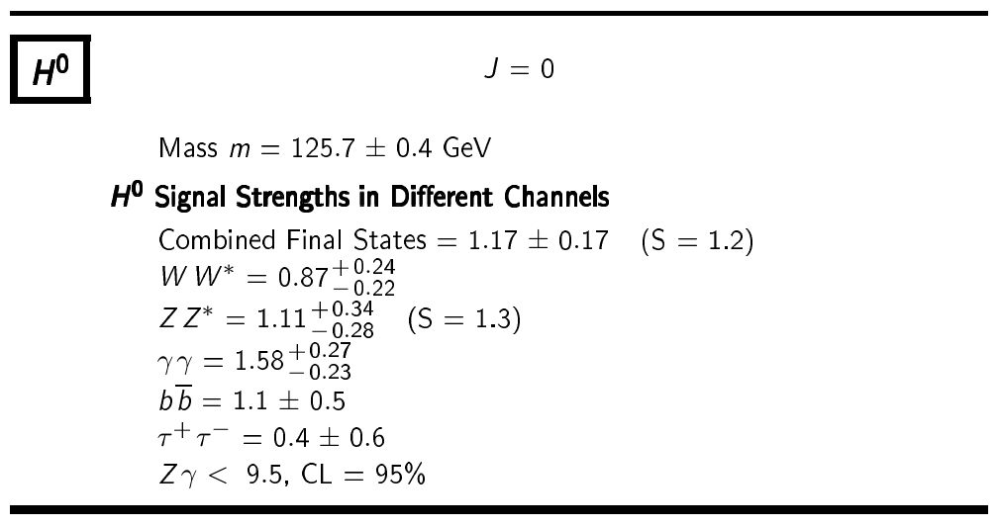

Simulation studies of scintillating fibre
mats for the LHCb upgrade


Inhaltsverzeichnis
Diese Präsentation beinhaltet:
- Vorstellung des LHCb Detektors und die Motivation des Upgrades
- Vorstellung des SciFi Trackers
- Testbeam Kampagne 2016 am CERN und anschließende Datenanalyse
- stand-alone Simulation von szintillierenden Fasermatten
- Zusammenfassung
Vorstellung des
LHCb Detektors und dessen Upgrade
Das LHCb Experiment

- LHCb misst CP-Verletzung im $B_{d}$ und $B_{s}$ Sytem, sucht nach Neuer Physik jenseits des Standardmodells
- Hauptanforderungen an den Detektor: zuverlässige Unterscheidung von $\pi$/$K$, hohe Zerfallszeit Auflösung, gute Auflösung von Teilchenmassen
- RICH: messen Teilchengeschwindigkeit über Cherenkov-Effekt, ermöglicht Teilchenidentifizierung (z.B. bei $\pi$ und $K$)
- VELO: misst 3D Track-Positionen zur Rekonstruktion von Vertices, ermöglicht u.A. Messung von Zerfallszeiten
- Tracking Stationen: ermöglicht Rekonstruktion von Teilchenspuren und Massen
Detektor Komponenten:
Detektor Upgrade

- instantane Luminosität wird auf $\mathcal{L}_{\text{inst}}= 2\cdot 10^{33}~\text{cm}^{-2}\text{s}^{-1}$ erhöht
- verbesserte Trigger Effizienz für eine Vielzahl an Zerfallskanälen
- Trigger: Einsatz eines vollen Software-Trigger Systems, benötigt Auslese des gesamten Detektors mit $40~\text{MHz}$ $\rightarrow$ Austausch der Front-End Elektronik
- Tracking: erhöhte $\mathcal{L}_{\text{inst}}$ verlangt nach höherer Granularität und Strahlenhärte der Tracking-Detektoren $\rightarrow$ Upgrade des VELO und TT, sowie Ersetzung von T1-T3 durch dem SciFi Tracker
Veränderungen:
Vorstellung des
SciFi Trackers
Anforderungen
- Hit-Effizienz so groß wie möglich ($\approx 99\,\%$) mit einer Rausch-Cluster-Rate von $< 10\,\%$
- räumliche Auflösung von $\le 100~\mu\text{m}$ in der Ablenkebene des Magneten
- Materialmenge innerhalb der Akzeptanz minimieren $(\chi/\chi_0 \le 1\,\%)$
- Auslese der Elektronik mit $40~\text{MHz}$
- Detektor sollte diese Anforderungen auch nach Bestrahlung in Höhe von $50~\text{fb}^{-1}$ erfüllen
Layout
- Higgs doublet replaced by gauge-invariant expression $\phi_1 \phi_2$ (since two Higgs' are needed in SUSY and $\phi^\dagger \phi$ is not holomorphic)
- Is a special case of the Frogatt-Nielsen mechanism, where a $U(1)$ symmetry is assumed and broken
- $(\phi_1\phi_2)$, $q_L$, $u_R$ and $d_R$ can all carry a charge under this $U(1)$
- Demanding invariance leads to a "factorizable" form $n_{ij}^{u,d}=a_i + b_j^{u,d}$
$$Y_{ij}^{u,d}(\phi)= c_{ij}^{u,d}\left( \frac{\phi_1 \phi_2}{M^2} \right)^{n_{ij}^{u,d}}$$
Choice of parameters II
- Assuming such a factorizable form, only one solution leads to the demanded hierarchy:$$a=(1,1,0), \quad b^d=(2,1,1), \quad b^u=(2,0,0)$$
so that $$Y^u\sim\begin{pmatrix}\varepsilon^3 &\varepsilon^1 &\varepsilon^1 \\\varepsilon^3 &\varepsilon^1 &\varepsilon^1 \\\varepsilon^2 &\varepsilon^0 &\varepsilon^0 \end{pmatrix}\quad Y^d\sim\begin{pmatrix}\varepsilon^3 &\varepsilon^2 &\varepsilon^2 \\\varepsilon^3 &\varepsilon^2 &\varepsilon^2 \\\varepsilon^2 &\varepsilon^1 &\varepsilon^1 \end{pmatrix}$$
$$n_{ij}^{u,d}=a_i + b_j^{u,d}$$
⇒ This structure can indeed reproduce all masses and mixings!
To the TeV completion...
- Not meant to be realistic, but a proof of concept for a TeV completion of this theory without excessive flavor violation
- We introduce additional $N$ generations of heavy vectorlike Dirac fermions $S^{u,d}$ and $R^{u,d}$ with the gauge quantum numbers of the left- and righthanded chiral components of the $u$ and $d$ quark, respectively:
$$S^d \sim q_L,\;\;\; R^d \sim d_R,\;\;\; S^u \sim q_L,\;\;\; R^u \sim u_R$$ - Their interactions are given by
$$ -\mathcal{L} = \left[ \bar{q}_L\lambda_0^d d_R +\bar{q}_L \lambda_1^d R^d + \bar{S}^d\lambda_2^d d_R + \bar{S}^d\left( {\lambda_3^d}^\dagger P_L + \lambda_4^d P_R \right)R^d \right] \phi + \text{h.c.}+ (u \leftrightarrow d)$$ 
...and back
- This gives us the effective Yukawa coupling matrices (analogously for $u$)
$$Y^d=\lambda_0^d+\lambda_1^d\lambda_3^d\frac{\phi^\dagger \phi}{m_{R^d} m_{S^d}}\sum\limits_{n=0}\left( \lambda_4^d\lambda_3^d\frac{\phi^\dagger \phi}{m_{R^d} m_{S^d}} \right)^n \lambda_2^d = \sum\limits_{n=0}c^{(n)}\left(\frac{\phi^\dagger \phi}{m_{R^d} m_{S^d}}\right)^n$$
⇒ Integrating out the heavy particles indeed reproduces the Higgs-dependent Yukawa couplings! (where $M^2=m_{R^d} m_{S^d}$)
Some remarks
- Babu and Nandi discussed a Frogatt-Nielsen mechanism with Higgs as Flavon in doi:10.1103/PhysRevD.62.033002
- To ensure the validity of this hierarchy, we assume that the suppression by a loop factor is stronger than $\varepsilon$: $$\frac{g_F^2}{16\pi^2}\lt\varepsilon$$
- We could also introduce Higgs-dependent kinetic terms, but one can argue that (for fundamental quarks) its effects are either subdominant in $\varepsilon$ or
can be absorbed by Yukawa couplings - CP violation effects considered by Lebedev in arXiv:1011.2630 [hep-ph]
Effects On
Flavor Changing
Flavor Changing
Neutral Currents
Flavor Changing Neutral Currents
$$\begin{align}-\mathcal{L}^\text{Y}&= \bar{u}_{Li} \;m_{ij}^u\; u_{Rj}+ \bar{d}_{Li}\; m_{ij}^d\; d_{Rj} + \text{h.c.}\\
&+ \bar{u}_{Li} \frac{h}{\sqrt{2}v} \left(2n_{ij}^u+1\right) \;m_{ij}^u\; u_{Rj}+ \bar{d}_{Li} \frac{h}{\sqrt{2}v} \left(2n_{ij}^d+1\right) \;m_{ij}^d\; d_{Rj} + \text{h.c.} + O(h^2),\end{align}$$
- Looking back at the effective Lagrangian, we see that the Higgs-fermion couplings are no longer neccessarily diagonal in the mass eigenbasis
⇒ The Higgs mediates tree-level FCNCs! - To switch to the mass basis, we use a bi-unitary transformation: $$u_{L/R}\rightarrow V^u_{L/R}u_{L/R}, \qquad d_{L/R}\rightarrow V^d_{L/R}d_{L/R}$$
- This leads to the following interactions between quarks and the physical Higgs: $$\mathcal{L}^{hff}=-\frac{h}{\sqrt{2}}J_h,\qquad J_h\equiv \frac{m_i^u}{v^2}\bar{u}_i u_i + 2 \left( G_{ij}^u \bar{u}_{Li}u_{Rj} + \text{h.c.} \right) + (u \leftrightarrow d),$$ $$\text{where } G_{ij}^{u,d}\equiv \frac{m_k^{u,d}}{v}n_{lm}^{u,d}V_{L\,li}^{*\,u,d} V_{L\, lk}^{u,d}V_{R\, mk}^{*\, u,d} V_{R\, mj}^{u,d}$$
- Integrating out the Higgs at tree level gives an effective four-fermion interaction $\mathcal{L}_{4f}= \frac{J_h^2}{4m_h^2}$
Flavor Changing Neutral Currents
- For factorizable $n_{ij}^{u,d}=a_i + b_j^{u,d}$, the new flavor-breaking coupling $G_{ij}^{u,d}$ takes a simpler form:
$$G_{ij}^{u,d} = A_{ij}^{u,d}\,\frac{m_j^{u,d}}{v} + \frac{m_i^{u,d}}{v} \, B_{ij}^{u,d},$$
$$A_{ij}^{u,d}\equiv V_{L\, li}^{*\, u,d} a_l V_{L\, lj}^{u,d}, \qquad B_{ij}^{u,d}\equiv V_{R\, mi}^{*\, u,d} b_m V_{R\, mj}^{u,d} $$
- For the texture considered by Giudice and Lebedev, this gives the following matrices:
$$A^{u,d}=\begin{pmatrix}1&\varepsilon^2&\varepsilon^1\\\varepsilon^2&1&\varepsilon^1\\\varepsilon^1&\varepsilon^1&\varepsilon^2 \end{pmatrix},\quad B^d=\begin{pmatrix}2&\varepsilon^1&\varepsilon^1\\ \varepsilon^1&1&\varepsilon^2 \\ \varepsilon^1 & \varepsilon^2 & 1\end{pmatrix}, \quad B^u=\begin{pmatrix}2&\varepsilon^2&\varepsilon^2\\ \varepsilon^2 & \varepsilon^4 & \varepsilon^4 \\ \varepsilon^2 & \varepsilon^4 & \varepsilon^4 \end{pmatrix}$$
Experimental Constraints I
- $\Delta F = 2$ constraints: Contributions to mass differences in Kaon, $D^0$, $B^0$ and $B^0_s$ mixing. E.g., for Kaons:
$$\mathcal{L}^{\Delta S=2}=\frac{m_s^2}{v^2m_h^2}\left(A_{12}^d\bar{d}_L s_R\;+\; B_{12}^d \bar{d}_R s_L\right)^2$$
$$\frac{\Delta m_K}{m_K}\simeq\frac{5f_K^2m_K^2}{12v^2m_h^2}\left( {A_{12}^d}^2 + {B_{12}^d}^2 -\frac{12}{5}A_{12}^d B_{12}^d \right)$$
Compatible with constraints since all relevant matrix elements $O(\varepsilon)$ or smaller - $\Delta F = 1$ constraints from processes like $b\rightarrow s\gamma$ less restrictive due to suppression by a loop factor and two Yukawa couplings
Experimental constraints II
- The CP-violating Observable $\varepsilon_K$ gives a slightly more restrictive constraint on the imaginary parts of the matrix elements
- Higgs-dependent Yukawa couplings can directly be extended to the lepton sector. Here, Higgs mediated currents can contribute to rare decays such as $\mu\rightarrow e\gamma, \mu\rightarrow eee, \tau\rightarrow \mu\gamma$ or $\tau\rightarrow \mu\mu\mu$.

- However, parameters can easily be chosen so that these processes lie beyond any foreseeable experimental reach
Effects On
Higgs Physics
Higgs couplings
- Coupling to weak gauge bosons is unaltered
- Coupling to fermions is, to lowest order in $\varepsilon$, enhanced by $2n_{ij}^{u,d,l}+1$ (⇒ top coupling unchanged)
- Therefore, the coupling to the massless gluons and photons is barely affected
- Additionally, there might be flavor violating production via $t\rightarrow hc$, possibly observable at the LHC
⇒ No change in the main Higgs production processes
Higgs decays
However, the situation looks different when considering Higgs decays: 
$\frac{\Gamma(h\rightarrow b\bar{b})}{\Gamma(h\rightarrow b\bar{b})_{SM}} \approx \frac{\Gamma(h\rightarrow c\bar{c})}{\Gamma(h\rightarrow c\bar{c})_{SM}} \approx \frac{\Gamma(h\rightarrow \tau^+\tau^-)}{\Gamma(h\rightarrow \tau^+\tau^-)_{SM}} \approx 9, \quad \frac{\Gamma(h\rightarrow \mu^+\mu^-)}{\Gamma(h\rightarrow \mu^+\mu^-)_{SM}} \approx 25$
⇒ Fermion pair end states are boosted with respect to the standard model, making boson final states much less prominent
Higgs decays @ the LHC
- We don't measure branching ratios, but rather $\sigma \times \mathcal{BR}$ for a given final state
- The signal strength is defined as $$\mu\equiv\frac{(\sigma\times\mathcal{BR})_\text{obs}}{(\sigma\times\mathcal{BR})_\text{SM}}$$
- We expect a strong suppression for $WW,ZZ$ and $\gamma\gamma$ final states, but:
⇒ Higgs-dependent Yukawa couplings stand in disagreement with
measured Higgs signal strengths ☹
measured Higgs signal strengths ☹
Sources
Theory:
[1] G. F. Giudice, O. Lebedev "Higgs-dependent Yukawa couplings"In Phys. Lett.. B665 (2008) pp. 79 arXiv:0804.1753 [hep-ph]
[2] K. S. Babu and S. Nandi, "Natural fermion mass hierarchy and new signals for the Higgs boson"
In Phys. Rev. D62 (2000) p. 033002 doi:10.1103/PhysRevD.62.033002
[3] C. D. Frogatt and H. B. Nielsen "Hierarchy of quark masses, cabibbo angles and CP violation"
In Nucl. Phys. B147 (1979) p.277 doi:10.1016/0550-3213(79)90316-X
[4] O. Lebedev "CP violation with Higgs-dependent Yukawa couplings"
In Phys. Lett. B697 (2011), p. 58 arXiv:1011.2630 [hep-ph]
Experiment:
[5] K.A. Olive et al. (Particle Data Group) "Review of Particle Physics"In Chin. Phys. C, 38, 090001 (2014).http://pdg.lbl.gov/
[6] Avital Dery, Aielet Efrati, Yonit Hochberg, Yosef Nir "What if BR(h-->μμ)/BR(h-->ττ) does not equal m_μ^2/m_τ^2?" In JHEP, 1305 (2013) 039arXiv:1302.3229 [hep-ph]
Summary
Theory:
- Giudice and Lebedev provide an effective theory that explains mass and mixing hierarchies through Higgs-dependent yukawa couplings, valid below the TeV scale
- A possible TeV completion that is viable for quarks was discussed
- Exhibits tree-level FCNC's and large deviations from SM predictions for Higgs branching ratios
Experiment:
- FCNC's are sufficiently suppressed to be compatible with experimental data
- However, the enhanced bottom yukawa coupling leads to a suppression of Higgs to gauge boson decays in conflict with LHC data
Any questions?
Bonus Material
Backup: Spontaneous Symmetry Breaking
- Down Yukawa: $ -\mathcal{L}\;=\; \bar{q}_{Li}\;Y_{ij}^d\;\phi\; d_{Rj} + \text{h.c.}; \quad\text{where } Y_{ij}^{d}(\phi)= c_{ij}^{d}\left( \frac{\phi^\dagger \phi}{M^2} \right)^{n_{ij}^{d}}$
- Electroweak Symmetry Breaking: $\phi= U \begin{pmatrix} 0 \\ v+\frac{h}{\sqrt{2}} \end{pmatrix}\Rightarrow Y_{ij}^{d}(h) = c_{ij}^{d}\left(\frac{v+h/\sqrt{2}}{M}\right)^{2n_{ij}^{d}}$
- With $\varepsilon\equiv \frac{v^2}{M^2}\;\Rightarrow\;Y_{ij}^{d}(h) = c_{ij}^{d} \;\varepsilon^{n_{ij}^d}\; \left(1+\frac{h}{\sqrt{2}v}\right)^{2n_{ij}^{d}}$
- Inserting this into the Yukawas gives $$\begin{align}-\mathcal{L}\;&=\bar{d}_{Li}\left( v+\frac{h}{\sqrt{2}} \right)c_{ij}^{d} \;\varepsilon^{n_{ij}^d}\; \left(1+\frac{h}{\sqrt{2}v}\right)^{2n_{ij}^{d}} d_{Rj}+\text{h.c.}\\ &=\bar{d}_{Li}\;v\,c_{ij}^{d} \;\varepsilon^{n_{ij}^d}\; \left(1+\frac{h}{\sqrt{2}v}\right)^{2n_{ij}^{d}+1} d_{Rj}+\text{h.c.}\\ &= \bar{d}_{Li}\;\underbrace{v\,c_{ij}^{d} \;\varepsilon^{n_{ij}^d}}_{\equiv m_{ij}}\; d_{Rj} + \bar{d}_{Li}\;\frac{c_{ij}^{d} \;\varepsilon^{n_{ij}^d}}{\sqrt{2}}\; \left(2n_{ij}^{d}+1\right) d_{Rj} + \text{h.c.} +O(h^2) \end{align} $$
Example of a
TeV Completion
To the TeV completion...
- Not meant to be realistic, but a proof of concept for a TeV completion of this theory without excessive flavor violation
- We introduce additional $N$ generations of heavy vectorlike Dirac fermions $S^{u,d}$ and $R^{u,d}$ with the gauge quantum numbers of the left- and righthanded chiral components of the $u$ and $d$ quark, respectively:
$$S^d (3,2)_{\frac{1}{6}},\;\;\; R^d (3,1)_{-\frac{1}{3}},\;\;\; S^u (3,2)_{\frac{1}{6}},\;\;\; R^u (3,2)_{\frac{2}{3}}$$ - Their interactions are given by
$$ -\mathcal{L} = \left[ \bar{q}_L\lambda_0^d d_R +\bar{q}_L \lambda_1^d R^d + \bar{S}^d\lambda_2^d d_R + \bar{S}^d\left( {\lambda_3^d}^\dagger P_L + \lambda_4^d P_R \right)R^d \right] \phi + \text{h.c.}+ (u \leftrightarrow d)$$
...and back
- This gives us the effective Yukawa coupling matrices (analogously for $u$)
$$Y^d=\lambda_0^d+\lambda_1^d\lambda_3^d\frac{\phi^\dagger \phi}{m_{R^d} m_{S^d}}\sum\limits_{n=0}\left( \lambda_4^d\lambda_3^d\frac{\phi^\dagger \phi}{m_{R^d} m_{S^d}} \right)^n \lambda_2^d = \sum\limits_{n=0}c^{(n)}\left(\frac{\phi^\dagger \phi}{m_{R^d} m_{S^d}}\right)^n$$ - Integrating out the heavy particles indeed reproduces the Higgs-dependent Yukawa couplings with $M^2=m_{R^d} m_{S^d}$!
Reproduction of the Yukawa matrix texture
- Our desired matrix texture could be generated by
$$m_{S,R}=M\operatorname{Id}_{4\times4},\quad\lambda_1^{u,d}=\operatorname{Id}_{3\times4},\quad\lambda_2^{u,d}=\operatorname{Id}_{4\times3},$$
$$\lambda_3^d=\begin{pmatrix}0&0&0&1\\0&0&0&1\\0&1&1&0\\1&0&0&0\end{pmatrix},\qquad\lambda_4^d=\begin{pmatrix}0&0&0&0\\0&0&0&0\\0&0&0&1\\0&0&1&0\end{pmatrix},$$
$$\lambda_3^u=\begin{pmatrix}0&1&1&0\\0&1&1&0\\0&0&0&1\\1&0&0&0\end{pmatrix},\qquad\lambda_4^u=\begin{pmatrix}0&0&0&0\\0&0&1&0\\0&0&0&0\\0&0&0&1\end{pmatrix},$$
$$\lambda_0^d = 0\quad\text{and} \quad\lambda_0^u=\begin{pmatrix}0&0&0\\0&0&0\\0&1&1\end{pmatrix}.$$
Some remarks
- Giudice and Lebedev find that also in the full theory FCNCs are sufficiently suppressed
- Higgs-dependent kinetic terms are also introduced. At lowest order
$$\frac{\lambda_1^d\lambda_1^{d\dagger}}{M^2}\;\overline{(\epsilon^{ab}\phi^\dagger_a q_{Lb})}\;i\not D \;(\epsilon^{ab}\phi^\dagger_a q_{Lb}) \;\;+\;\; \frac{\lambda_1^u\lambda_1^{u\dagger}}{M^2}\;\overline{(\epsilon^{ab}\phi_a q_{Lb})}\;i\not D \;(\epsilon^{ab}\phi_a q_{Lb})$$
(analogously for $u_R$ and $d_R$) - These terms give new, partly flavor-violating contributions to couplings to electroweak gauge bosons
- For quarks, this is consistent with current constraints, but not for the more precisely measured couplings to leptons!